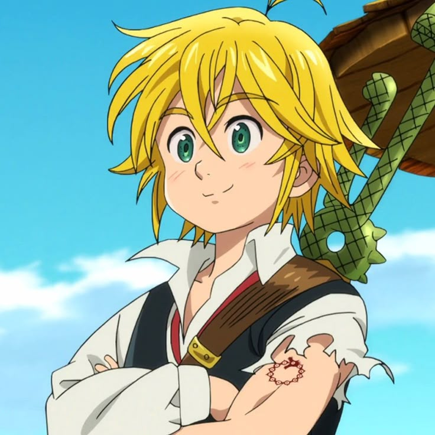
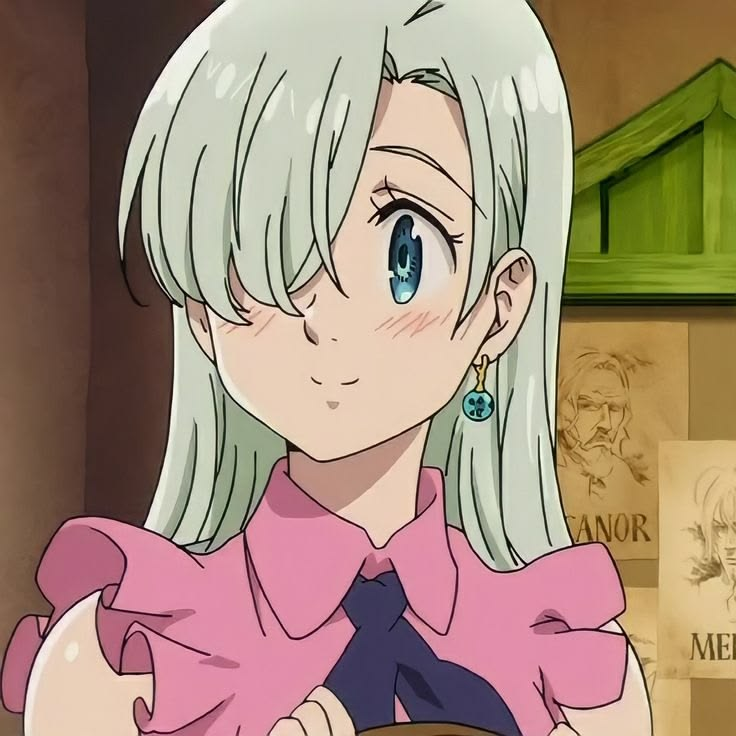
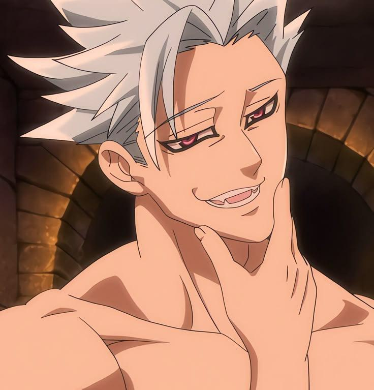
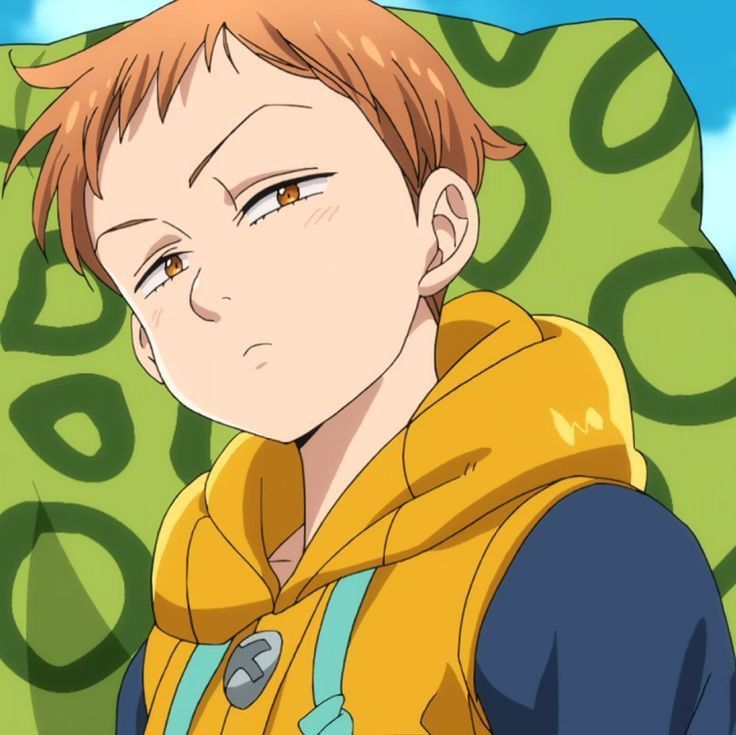
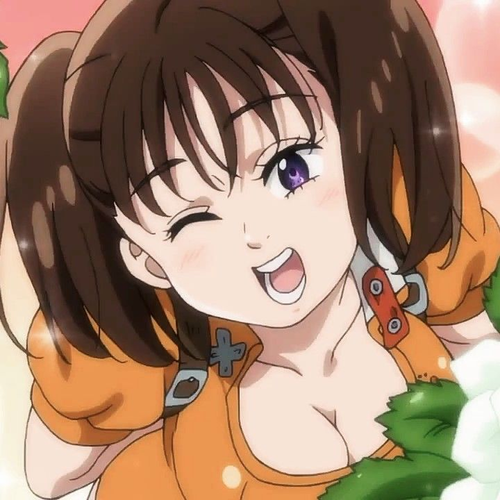
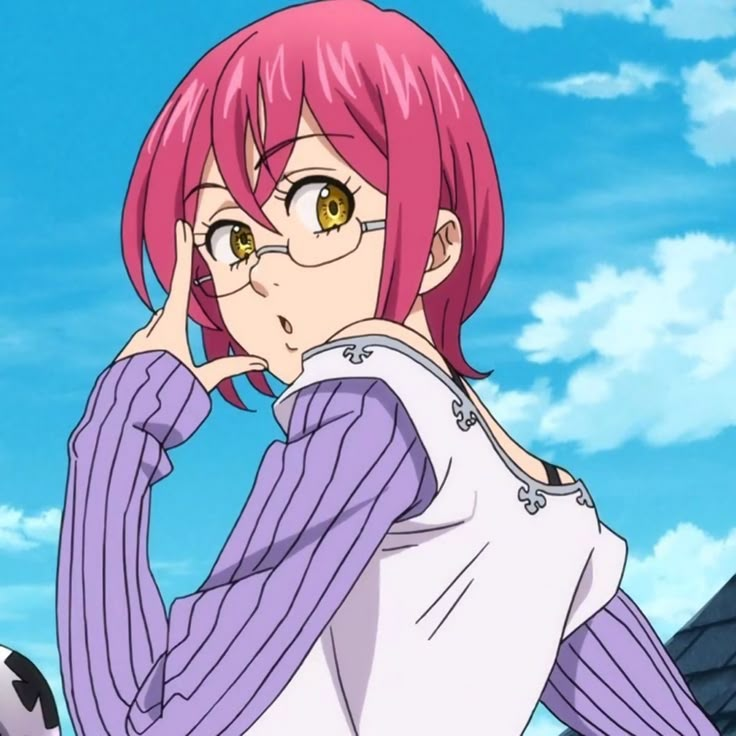
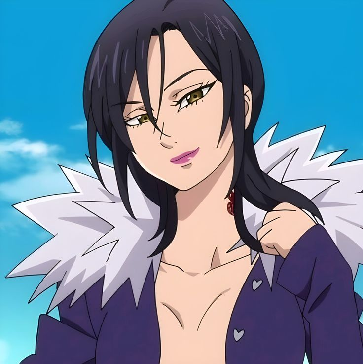
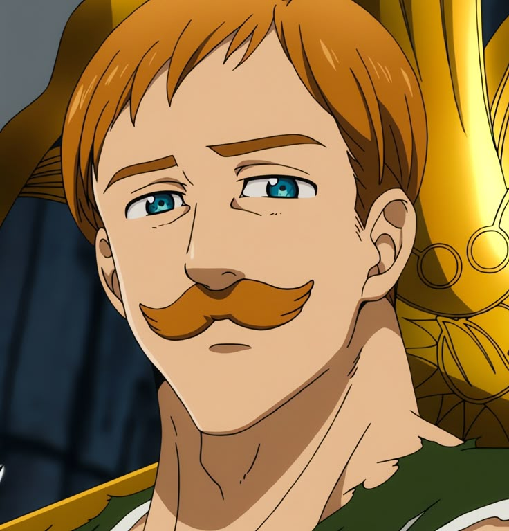

Em um mundo medieval repleto de magia, gigantes, fadas, demônios e cavaleiros sagrados, os Sete Pecados Capitais retornam para proteger Britannia de uma antiga guerra.

Capitão dos Sete Pecados Capitais. Pequeno na aparência, mas dono de um poder demoníaco gigantesco.

Gentil e determinada. Foi quem reuniu novamente os Sete Pecados Capitais para salvar Britannia.

O imortal do grupo. Extremamente rápido, forte e fiel aos amigos.

Rei das Fadas e utilizador da poderosa Lança Espiritual Chastiefol.

Gigante de enorme força. Controla a terra usando a sua magia.

Misterioso e extremamente inteligente, domina poderosas magias relacionadas com memórias e com a mente.

A maior maga de Britannia. Possui conhecimento praticamente infinito sobre magia e alquimia.

O homem mais forte durante o dia. Seu poder aumenta conforme o Sol alcança o ponto mais alto do céu.
— Meliodas